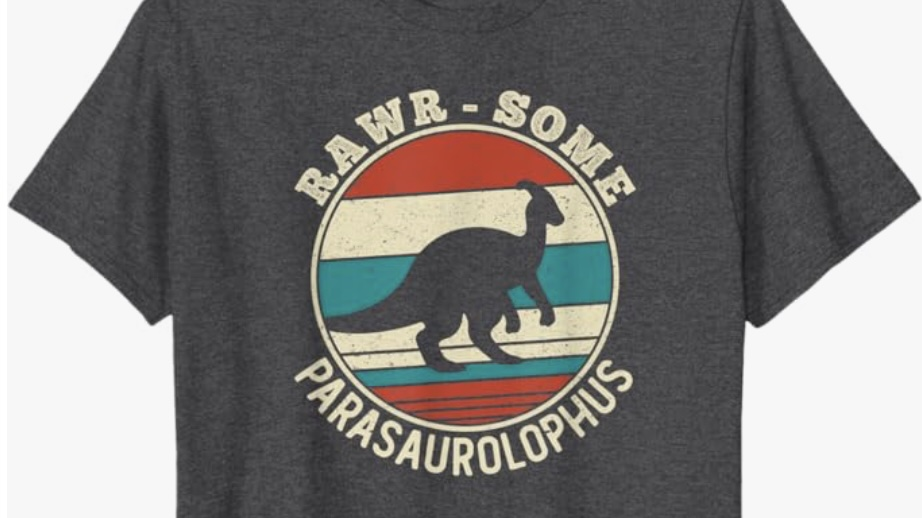
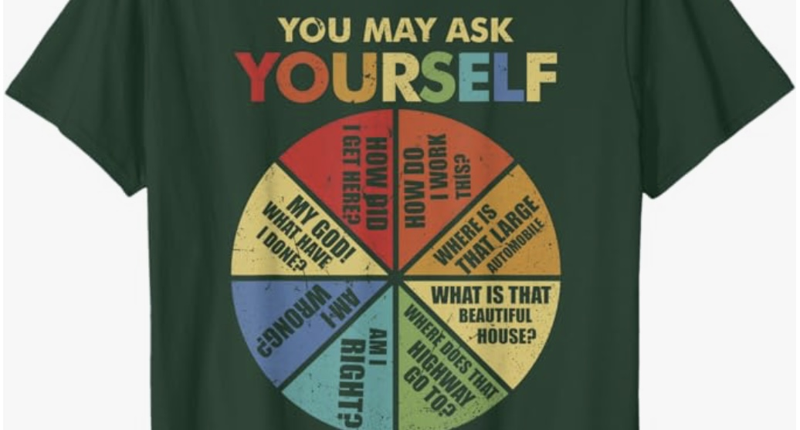
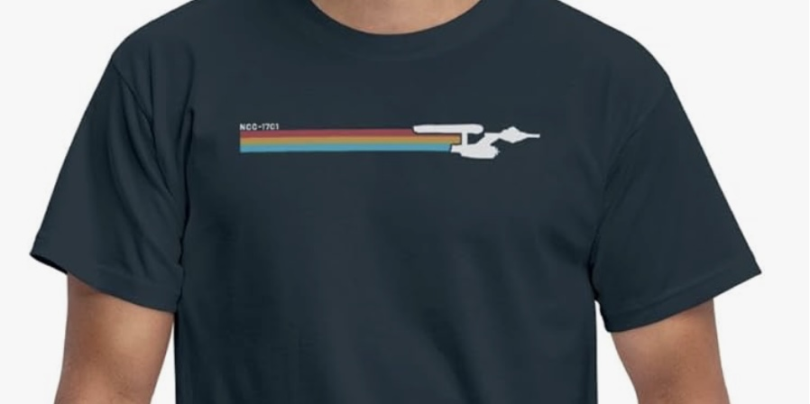

Here's how this works …
I am absolutely a difficult person to buy gifts for. I used to maintain an Amazon wish-list, but that's sorta bad because, while it's convenient to give out a single address for a wish-list, it forces both of us to use Amazon. And honestly, it's a pain maintaining it. And also it's actually a bit of a janky user experience to use Amazon's wish-list feature. Plus, I've noticed bugs in there that haven't been fixed for years.
It's probably better if I just point folk to this page where I can control what is written about each item, and so here we are …
Nothing on this list is stupid expensive. I have zero expectations concerning gifts. I'm absolutely happy receiving cheap consumables like guitar strings.
Hell, just get Yas and I a bottle of wine.
Album cover wall art
There are lots of sellers on Etsy specialising in album cover wall art. I have a handful already hanging in the office of records that are meaningful to me.
The short list of ones I wouldn't mind adding is …
- Weezer "The Blue Album" (1994)
- Blur "Blur" (1997)
- Eels "Electro-Shock Blues" (1998)
- Godspeed You! Black Emperor "Lift Your Skinny Fists like Antennas to Heaven" (2000)
- Wilco "Yankee Hotel Foxtrot" (2002)
- Super Furry Animals "Phantom Power" (2003)
- Spoon "Lucifer on the Sofa" (2022)
A3 size — matte finish if possible.
T-shirts
This section is intended as a sample of the kind of thing I like in a t-shirt: graphic designs, daft puns, dinosaurs, music, science fiction, et cetera, et cetera.
Men's Large size, please! When it comes to colour black is fine, but I like grey, green, navy blue, red as well.
Nothing too obvious, loud, or in your face. Simple, subtle, and small is usually best.


